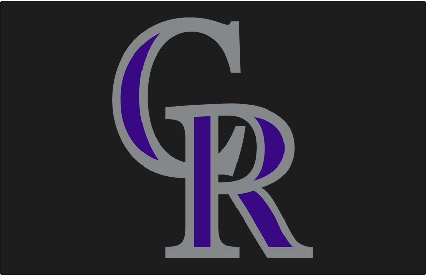

The Rockies were founded in 1993 as an expansion team and played their home games at Mile High Stadium for their first two years. In 1995, they moved to Coors Field and have been there ever since. The Rockies have made the playoffs five times in their history, all of them as a wild card team. They made the World Series once in 2007, where they were swept by the Red Sox. They last made the playoffs in 2018, losing to the Brewers in four games in the NLDS. The Rockies have an overall record of 2,201-2,495 (.469 winning PCT) since 1993. They still have yet to win a division title.
